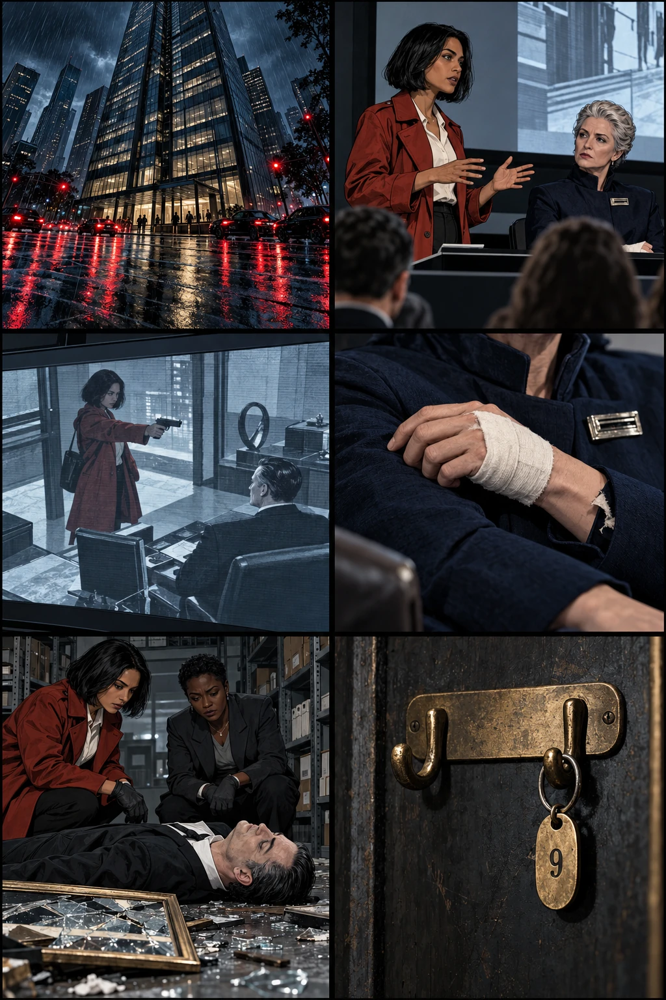
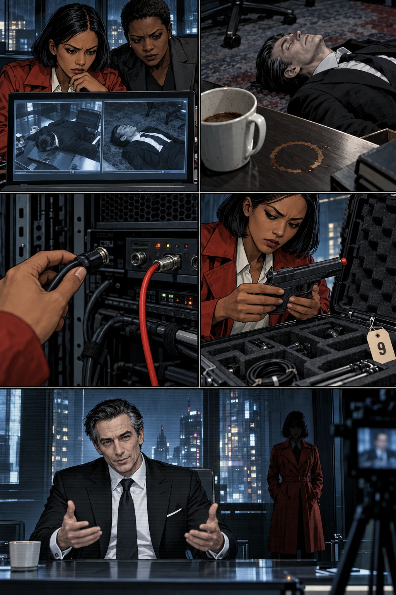
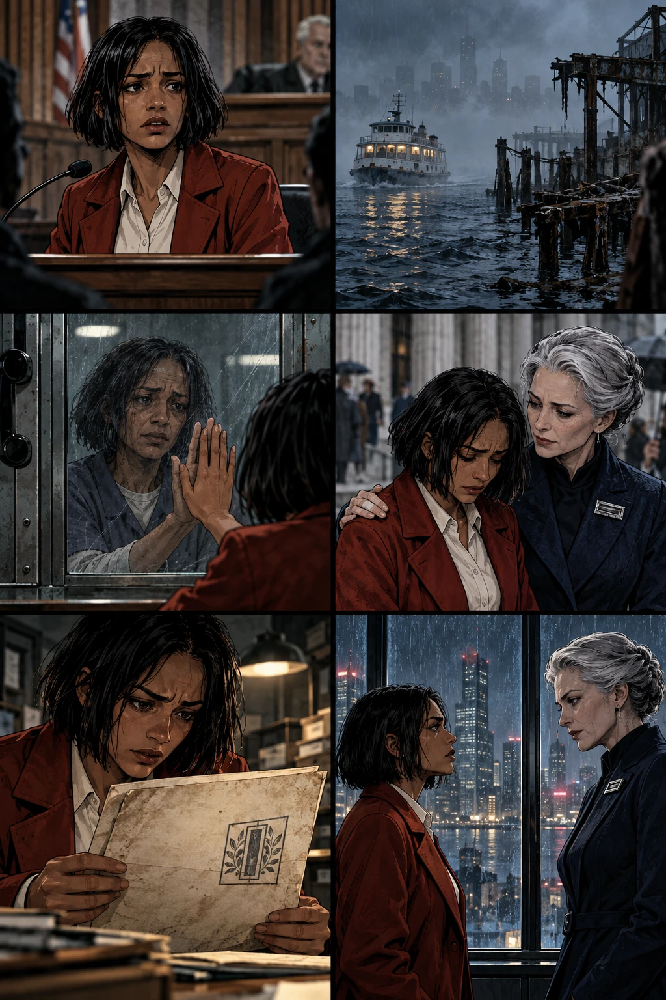
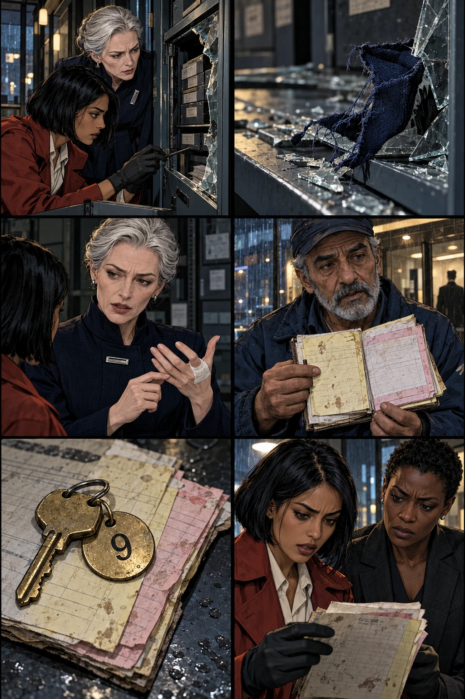
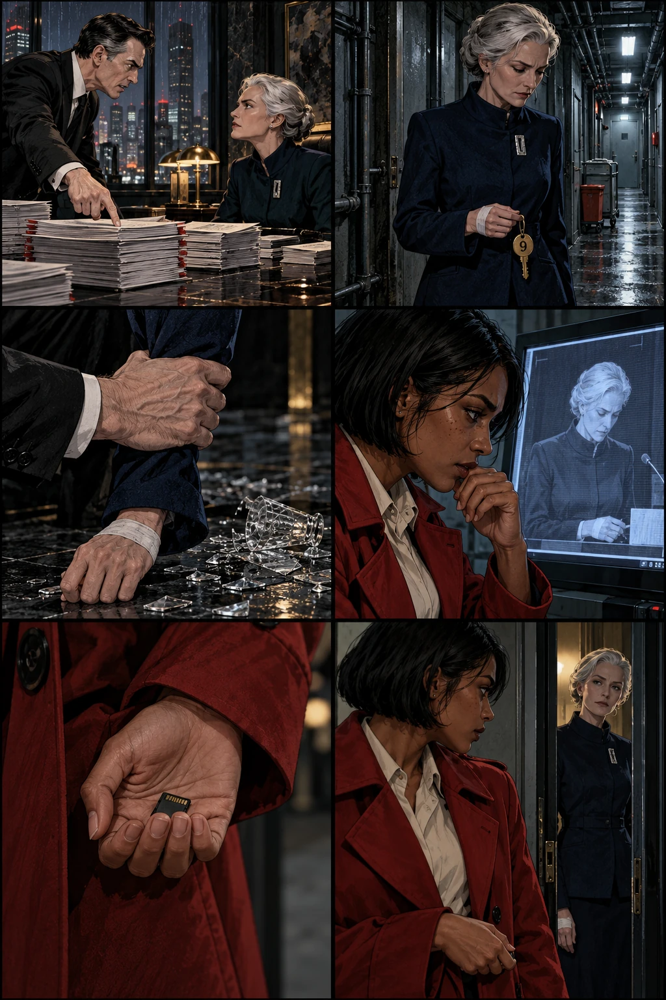
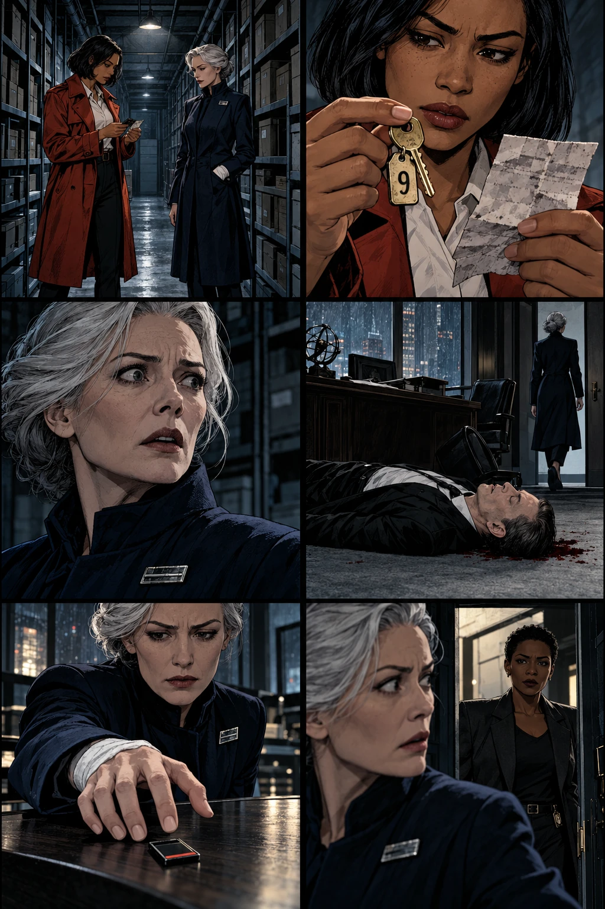
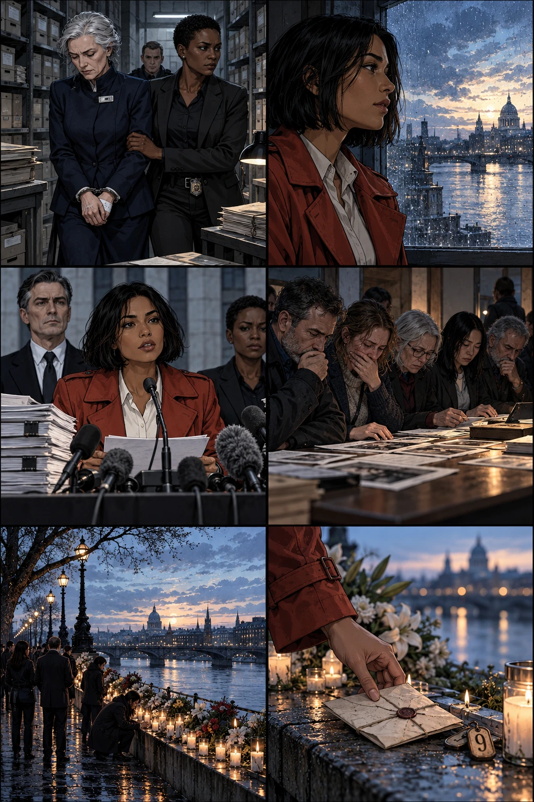
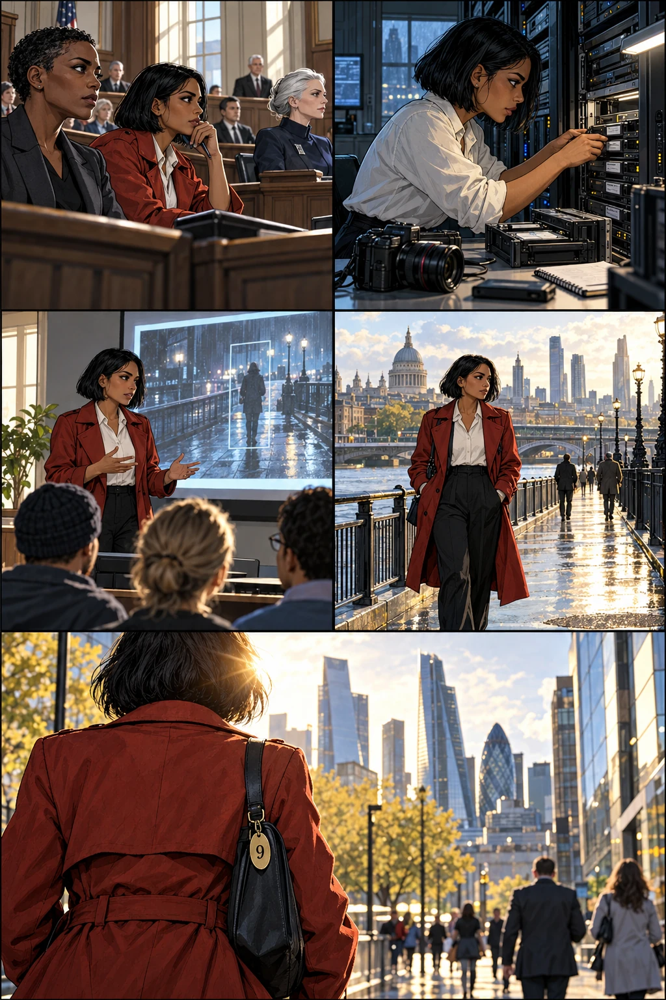

The city had twelve thousand cameras. That night, every one of them seemed to be looking somewhere else.
BroadcastWitness founder Orren Voss is expected to announce a breakthrough in authenticated video tonight.
A conspiracy in eight chapters
A murder caught on camera.
A suspect who couldn't be there.
A signature that never lied.
Thursday · 21:17

The city had twelve thousand cameras. That night, every one of them seemed to be looking somewhere else.
BroadcastWitness founder Orren Voss is expected to announce a breakthrough in authenticated video tonight.
Next door. Civic Auditorium. Ione Vale has been onstage since 20:30.
IoneA signature can tell you whether a file changed after it was signed. It cannot tell you whether the camera was shown the truth.
MaelisYou didn't always make that distinction.
Every phone in the room lights up. On the screen: Ione's face. Ione's coat. A gun.
BroadcastThis footage was signed by Witness's own hardware at 21:17. Police have been notified.
IoneI've been standing here for forty-seven minutes.
Maelis Rook. Independent auditor. Ione's former mentor. She arrived at 20:52 with a bandage and an apology.
MaelisThe lift caught my hand. Look at me, Ione. We'll fix this.
Maelis, on the phoneTell the officers to look under his back. He keeps a backup drive on him.
21:43. Detective Edra Quill brings Ione to the archive. The public has already seen a murder. Edra wants to see whether it is this one.
EdraNo gunshot wound. A stab wound. No weapon recovered.
IoneIn the video he fell across his desk. Face down.
EdraHere, he's on the floor. Face up.
The street door is locked. The service door isn't. Beneath the key rack, a cardboard box is labeled REHEARSAL.
EdraTwo doors. Four authorized keyholders: Voss, his producer, the building manager and Rook. A recording that contradicts the body.
IoneAnd somebody who wanted us to begin with the recording.
Thursday · 22:06

Ione works from a forensic copy. The original and the hardware stay in police custody.
EdraCan you prove the woman isn't you?
IoneYour auditorium witnesses already do that. I want to know what this system actually certified.
IoneThere. Frame nine. One frame of a calibration slate before the office appears.
The slate reads PLAYBACK INPUT 09. The video is a recording of a performance, passed through the building's signing system.
IoneThe face could be composited. The gun could be a prop. Neither requires breaking the signing key.
EdraAnd the real body never appears in it.
In the footage, coffee spills across a document. In the room, the stain is dry and the document has been replaced.
IoneThis doesn't give us a time of death. It gives us a reason not to use 21:17.
EdraI'll have the examiner establish a window. We keep the clock out of the theory until then.
The camera is disconnected. A playback unit feeds the signer. The signature is real. The claimed source is not.
IoneWitness sold the public a camera seal. Technically, it's an input seal.
EdraWho knew?
IoneWhoever signed off on the product. And whoever designed tonight's demonstration.
The prop pistol comes from the rehearsal box. So does a call sheet: FINAL DEMO — VALE LIKENESS — RELEASE 21:17.
EdraVoss commissioned a video of his own murder?
IoneHe commissioned a video that would be impossible to believe. Then had his system certify it.
The production assistant confirms the shoot ended at 19:10. She left at 19:25, then spoke to Voss live by phone at 20:34—four minutes after Ione went onstage. He was still alive.
Orren, rehearsal audioShe'll be onstage. Her alibi is the point. Ninety seconds later, I go live and explain the flaw.
EdraSomeone murdered him in the gap between the rehearsal and the broadcast.
IoneAnd let his own publicity stunt announce it.
Six years earlier

Six years earlier, a Witness recording helped convict ferry captain Neris Vale of criminal negligence. Ione was the junior analyst asked to examine it. Neris was her father.
CounselHas this recording been altered?
Ione, thenThe signed file is intact. The recording is authentic.
Ione, nowI answered a larger question than I had tested.
Eleven people died at Blackwater Pier. The prosecution said Neris opened a restricted gate and sent the ferry into an unsafe berth.
Ione, narrationThere were other causes to investigate: removed impact barriers, an expired inspection, an overloaded sailing.
Ione, narrationOnce they had a man on film, the city stopped looking for a system.
Neris died in prison fourteen months later. He never asked Ione to change her testimony.
NerisFind out what you actually saw. Don't make it kinder for me.
Ione, narrationI spent five years trying to prove a file had changed. It hadn't.
Maelis paid for the appeal. Found experts. Kept returning Ione's calls when everyone else stopped.
Maelis, thenYour mistake was trusting Voss. Let me help you make it right.
Ione, narrationSix months ago, an anonymous source began sending me Witness documents. Every leak pointed toward Orren.
Present day. The rehearsal box contains Orren's presentation notes. One line is circled: BLACKWATER — ORIGINAL INPUT, FULL AUTHORIZATION CHAIN, ANNEX NINE.
IoneMy source sent annexes one through eight.
EdraAn omission isn't proof of a conspiracy.
IoneNo. But it's a question somebody chose for me not to ask.
Maelis arrives at police request. She recognizes Orren's handwriting before Ione explains the page.
MaelisHe wanted immunity. He'd confess to an old defect, sell a new fix, and call it courage.
IoneYou knew about the demonstration?
MaelisThe board did. He asked me to retrieve a document from his archive. I refused.
Friday · 00:12

The cabinet is empty. Its inventory lists an original Blackwater file and a removable backup. Both are missing.
MaelisIf he was going to expose the old footage, this proves he killed your father's reputation.
IoneIt proves he kept something. We haven't read it.
EdraNo one leaves with documents. We photograph them where we find them.
Edra photographs a scrap of navy fabric caught in the shattered frame. A small blood smear marks the edge. The frame stood beside the desk.
EdraSeparate swabs. Separate bags.
Ione, narrationA torn cuff isn't an identification. A blood smear isn't a name. But a room can ask better questions than a screen.
Ione remembers the bandage at 20:52. Maelis is careful to keep her hand still.
IoneWhich lift?
MaelisThe civic hall. Ask the attendant.
EdraWe will.
CaptionThe attendant later confirms she arrived already bandaged. There was no reported lift incident.
Tamer handles physical archive access. The electronic register is new. His duplicate receipt book is not.
TamerThey call this a redundant system. I call it keeping my job when theirs breaks.
EdraWho collected the service key tonight?
TamerDr. Rook. She signed for it herself.
The retained carbon: KEY 09 / ROOK, M. / OUT 20:38 / BACK 20:49. A note: HAND BLEEDING — OFFERED FIRST AID.
TamerShe gave back the key but asked for her receipt. Said the appointment was confidential. I let her have the top copy.
EdraAnd the carbon stayed in your book.
Maelis's onstage alibi begins at 20:52. The archive is a short walk from the civic hall through the service passage.
EdraThis puts her here. It doesn't prove she killed him.
IoneNo. But she said she refused to come.
EdraThen we ask why she lied. And we don't tell her yet what the carbon says.
Friday · 01:03

Orren's lawyer provides the proposed cooperation agreement. Maelis's name is in the subject line. The meeting was arranged for 20:40.
Orren, in an attached voice memoYou don't get to be the independent auditor when you authorized the substitution. Bring the original waiver. Tonight we tell it all.
IoneHe wasn't just exposing his product. He was negotiating who took the fall.
Edra's team finds the backup in the lining of Orren's jacket. The files include the missing annex. The paper originals will still need to be traced.
IoneMaelis approved the pier's safety waiver. After the crash, she ordered Voss to substitute older footage of my father opening the gate.
EdraAnd signed the independent report that certified the system used to authenticate it.
Access. Motive. A lie. Each is evidence, but none is the whole case.
IoneShe paid for an appeal that attacked Voss's file. Not her audit. She chose the experts. She chose which documents we received.
EdraControlled opposition.
IoneShe didn't have to stop me investigating. She only had to keep choosing where I looked.
A possible reconstruction, not yet a proven one: a confrontation at the desk. A struggle. The frame breaks. Someone leaves with a cut palm.
EdraThe lab will test the blood and fibers. We don't turn a good story into a verdict.
IoneThat's what happened to my father.
EdraThen we do this part slowly.
Edra has the auditorium recording played back. The microphone caught Maelis's call at 21:18. Officers entered the archive at 21:31.
Maelis, recordingTell the officers to look under his back.
IoneThe public footage showed him face down at a desk. She knew the position of a body no one had reported finding.
EdraWe'll ask her how.
Maelis has asked to see Ione before leaving. Edra agrees to a supervised conversation in the archive anteroom. Ione carries a copy, never the seized original.
MaelisDid you find the backup?
IoneYes. All nine annexes.
MaelisLet me explain the ninth before you give it to anyone.
Friday · 01:26

Edra remains just outside the open doorway. Maelis has agreed to speak. Ione no longer needs to make her comfortable.
IoneYou sent the anonymous leaks.
MaelisI gave you the man who built it.
IoneAnd left out the woman who told him what to show.
Ione shows her the service-key number and a copy of the carbon receipt. The originals are sealed away.
MaelisI went there. We argued. He was alive when I left.
IoneThen why tell police to look under his back?
MaelisI saw the broadcast.
IoneThe man in that broadcast never lay on his back.
For the first time, Maelis stops correcting the terms of the question.
MaelisEleven people died. The company would have collapsed. Everyone needed an explanation.
IoneThey needed the truth.
MaelisYour father was already at the controls.
IoneSo you made being there the same thing as being guilty.
Maelis's account, later checked against the scene: Orren threatened to publish her waiver and order. She took the archive letter opener. When he fell, the frame broke beneath her hand.
MaelisHe said he'd tell the world how I used your mother's rent and your appeal to keep you close. All of it.
MaelisI searched his pockets. I couldn't find the copy. I didn't know about the lining.
IoneYou could have let him.
MaelisI had spent six years keeping it contained.
She reaches for the copy. Ione moves it away.
MaelisGive me a day. We can release the part that clears Neris. You can have your father back without burning everything.
IoneI don't get him back.
IoneAnd you don't get to select the evidence again.
Edra enters. The interview stops. There will be counsel, a recorded statement, laboratory work and a trial. A confession will not be allowed to do the work of all four.
EdraMaelis Rook, you're under arrest on suspicion of murdering Orren Voss.
MaelisI was the only person who stayed with you.
IoneYou were the only person who knew where the search would end.
The following week

The weapon is recovered from a locked service waste bin along Maelis's exit route. It is supporting evidence, not a miracle: the case began before anyone knew where to search.
EdraHer blood is on the glass. His is inside her cuff. The retained receipt matches Tamer's account.
IoneAnd the files?
EdraMatched to insurer copies and the port authority's original correspondence. We don't have to take Voss's word for them.
Orren Voss is a murder victim. He was also a participant in the Blackwater cover-up. Neither fact cancels the other.
IoneHe was going to use my face without consent, terrify a room, expose his own fraud and sell the cure.
EdraHe still had the right not to be murdered.
IoneYes. Put that in the same sentence.
Ione releases a statement with the victims' lawyers. It includes the limits of her work six years earlier, and the sentence she should never have said.
ReporterWere you deceived?
IoneYes. I also overstated my findings. You can hold both facts at once.
ReporterWho broke the encryption?
IoneNobody. That's the part you need to print.
The families receive the records before the press gets the report. Some want prosecution. Some want compensation. Some want a name on a death certificate corrected.
A victim's sisterDoes this mean your father didn't do it?
IoneThe new evidence supports overturning his conviction. The lawyers are filing.
A victim's sisterThen we should have had these papers six years ago.
Ione visits the memorial for the eleven people who died at the pier. Her father isn't listed. She stands there anyway.
Ione, narrationFor years I imagined the truth arriving like an acquittal. A door opening. A voice saying I could stop.
Ione, narrationIt arrived as work other people should never have had to do.
She reads the last line of her father's final letter, then folds it and takes it home.
Neris, letterI don't need you to believe me because I'm your father. I need you to keep looking because you're my daughter.
Fourteen months later

Neris Vale's conviction is vacated. The court finds the substituted footage and concealed safety records undermined the prosecution's case. His name is cleared. The empty chair remains empty.
EdraWould he have come today?
IoneHe would've complained about parking.
CaptionShe laughs once. It catches her by surprise.
Maelis is convicted of Orren's murder. Separate proceedings address the Blackwater cover-up. The verdict rests on testimony, records, physical evidence and her statements—not on a single image.
Ione, narrationShe asks me to visit. I don't go.
Ione, narrationThat is a boundary, not a mystery.
Witness is placed under court supervision. Ione helps the victims' lawyers commission an independent review. Capture, transfer and signing are examined separately.
EngineerThe new seal says the file is valid.
IoneThen label it FILE SIGNATURE VERIFIED. Don't label it TRUE.
At a public workshop, she plays the first eight frames of the Voss clip. Then the ninth. The calibration slate is visible for a fraction of a second.
StudentIs the lesson that video can't be trusted?
IoneThe lesson is to ask what the evidence supports. Then look for something independent that could prove you wrong.
There was no impossible murder. There were two events: a performance built to be seen, and a killing meant to hide behind it.
Ione, narrationThe first twist was that the picture lied.
Ione, narrationThe harder one was that the person helping me expose it had been choosing my questions for years.
On her next report, Ione removes the word authentic. In its place, she writes exactly what she tested. Nothing more. Nothing less.
Final captionA signature tells you who vouched for a story. It does not tell you who the story leaves out.
END
After the final frame
The story is complete. Open the case notes to trace the clues back to their first appearances.
Voss recorded a staged shooting at 19:10 and scheduled it for 21:17. Rook visited at 20:38, killed him before returning the key at 20:49, then reached the auditorium at 20:52. The broadcast gave everyone an apparent alibi for a killing that had already happened. The story does not pretend to establish an exact minute of death.
| First appearance | What it means |
|---|---|
| Chapter 1 · The bandage and torn cuff | Rook arrives injured before the supposed murder. Her lift explanation is contradicted by the attendant; physical evidence later connects her to the broken frame. |
| Chapter 1 · “Under his back” | Rook knows the actual body's position thirteen minutes before police enter. The staged video shows a different position. Her own explanation—that she saw the broadcast—cannot account for her knowledge. |
| Chapter 1 · The service door | The room is never truly sealed. Physical access exists outside the camera story. |
| Chapter 2 · Frame nine | The calibration slate identifies a playback input. A legitimate signature protects the supplied recording; it does not establish that those pixels came live from the claimed camera. |
| Chapter 2 · The dry coffee stain | It challenges the recording's apparent immediacy. It is deliberately not used as a precise forensic clock. |
| Chapter 3 · The missing annex | The helpful anonymous source supplied genuine evidence selectively. Rook's sponsorship and leaks kept Ione investigating within boundaries Rook chose. |
| Chapter 4 · The carbon receipt | An independent physical record survives Rook's removal of the top copy. Tamer's testimony, the times and the injury note connect it to the night's events. |
The murder case combines access records, the porter's account, the false lift story, prior knowledge of the body, laboratory findings, the recovered weapon and Rook's statements. The historical cover-up is corroborated against records held by the insurer and port authority. Neither case depends on trusting Voss's files alone.
Voss is neither an innocent martyr nor the killer. Rook is neither a simple rescuer nor an all-powerful puppet master. Ione is neither the murderer in the video nor free from responsibility for her earlier overstatement. Solving the crime requires keeping those uncomfortable facts together.